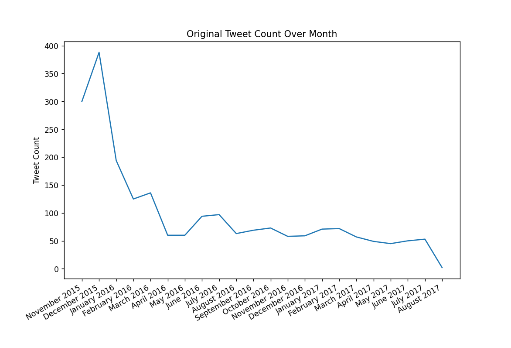
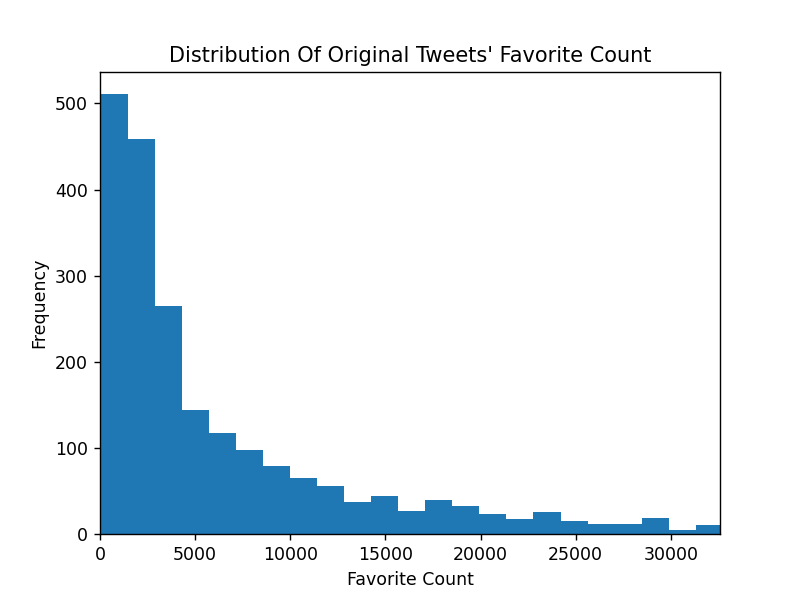

Analysis Report
Question & Insights:
Question #1 - What is the most common dog breed prediction ?
- concatenate all prediction columns. This would allow to later count all breed appearances combined.
- get the top from
.describe(). 'top' is essentially the combined breed series' mode.Question #2 - What is the mean rating numerator ?
- calculate
master_df['rating_numerator'].mean()
- Include only original tweets:
master_df['text'][master_df['is_original']]. Masking the DataFrame for including only
original tweets would allow us to better focus our analysis on one area, thus yielding more meaningful insights.
- apply
len for a new series using .map()
- get
.mean()
Insights:
- the most common dog breed prediction is Golden Retriever.
- the mean rating numerator is 13.13.
- the mean text length (character count) for original WeRateDogs tweets is 120.1.
Visualization
- Include only original tweets:
master_df['timestamp'][master_df['is_original']]
- create a series of only [month name] [year] in string format
- use
.value_counts(). It extracts counts of appearances of each month - year pair within the masked data.
- sort the values according to index in datetime format. This is crucial for the correctness of the
wanted line chart, as otherwise months would not appear as chronologically ordered.
- plot a line chart: A line chart is best suited for the task, as the plot is quantity (count) over time (month - year).
From the output bellow, We can observe that December 2015 was the most active month for
WeRateDogs in terms of original tweets count.

- Include only original tweets:
master_df['favorite_count'][(master_df['is_original']) & (master_df['favorite_count'].notna())]
- plot a histogram for the given series
- limit by a certain percentile. This should be done in order to neglect extreme values with very small frequencies that cause the chart to look scattered and hard to interpret.
While looking at the outputted histogram bellow,
we can see that it is right-skewed.
